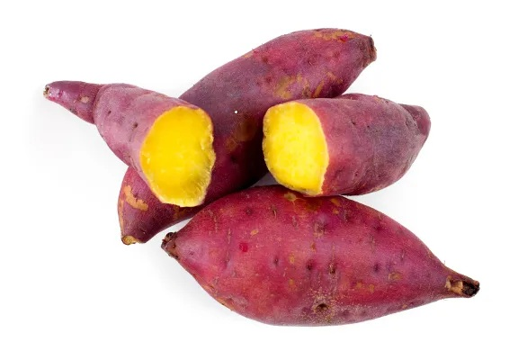

농작물 명칭: (고구마)
재배 및 생산 특성
- 품종:고구마
- 고구마 종류: 밤고구마,호박고구마,꿀고구마, 자색고구마 bath_outdoor
- 재배 환경: 시설재배 / 노지재배 등
유통 구조 설계
생산자→로컬푸드 직매장→최종 소비자
- 물류방식: 저온 유통(cold chain) 활용 여부 등
- 판매 전략:직거래 / 온라인 마켓 등
- !추운 겨울!:생각나는 맛있는 고구마